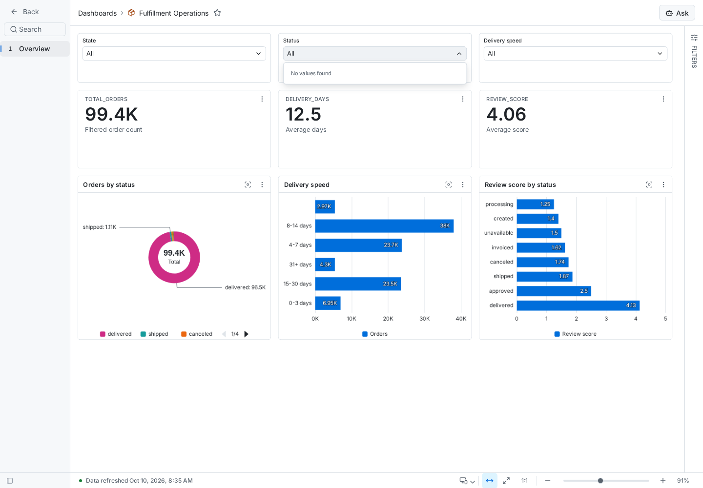
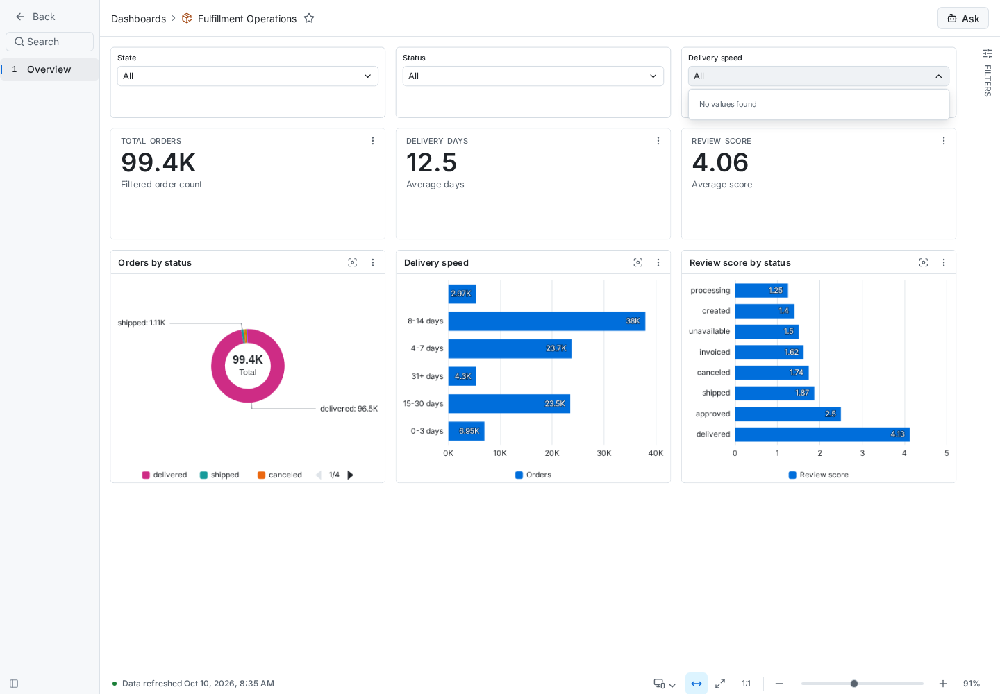
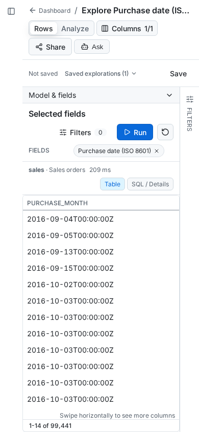
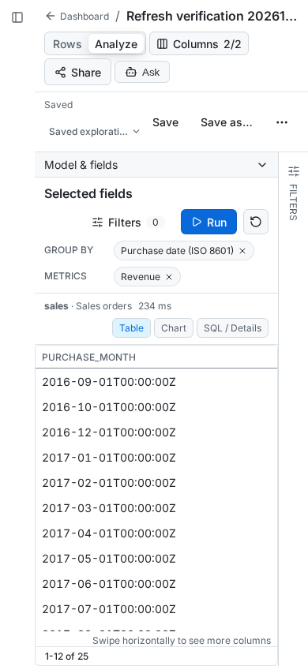
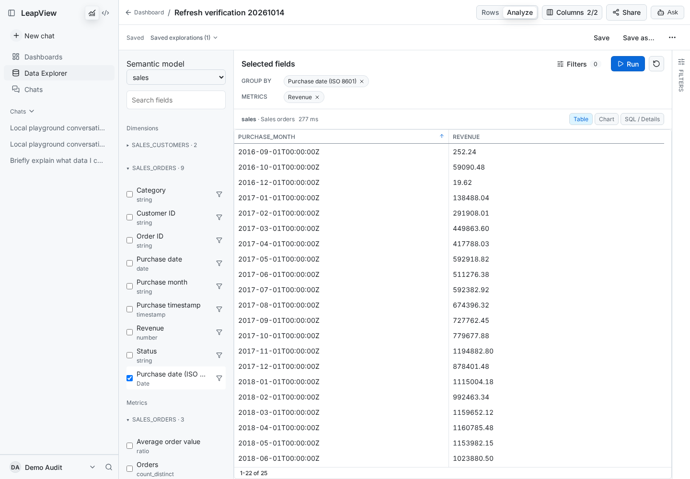
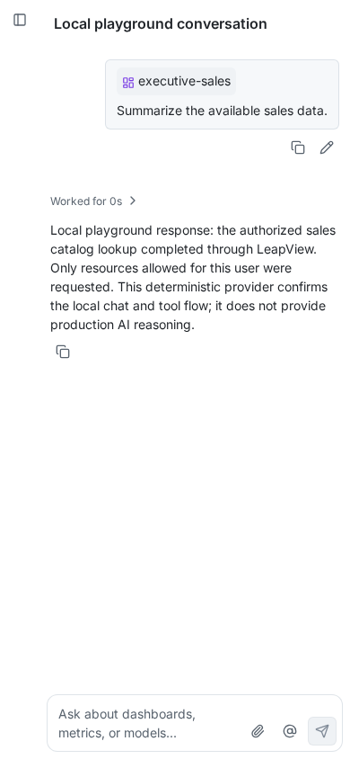
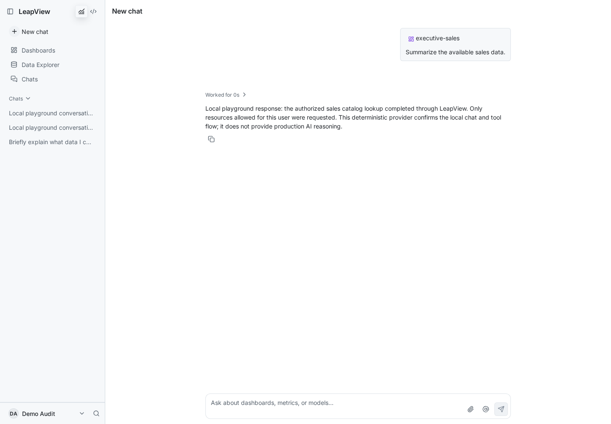
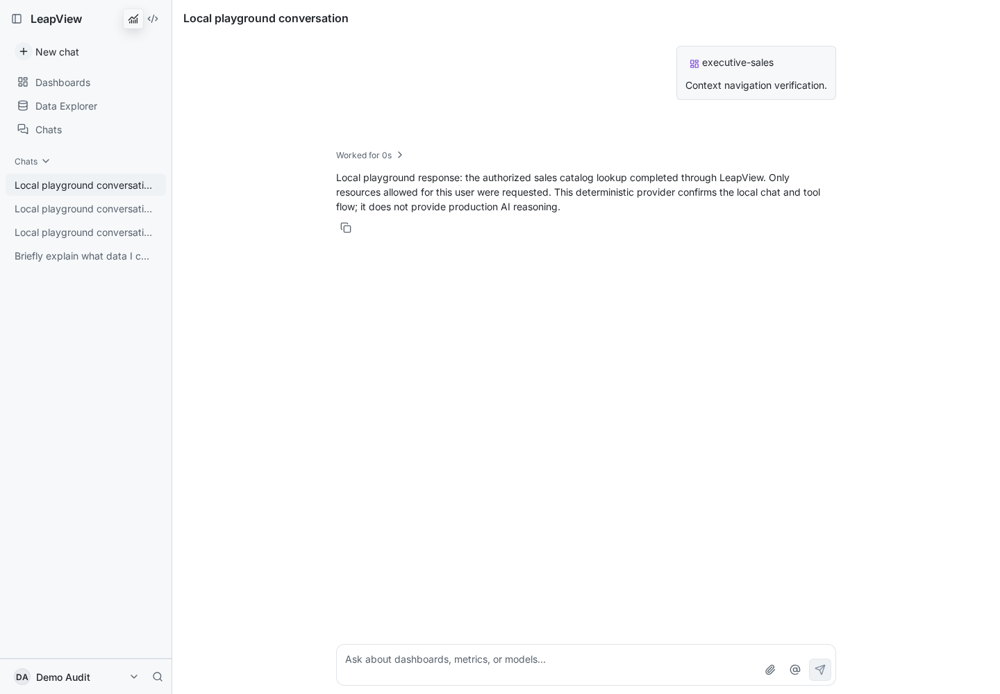
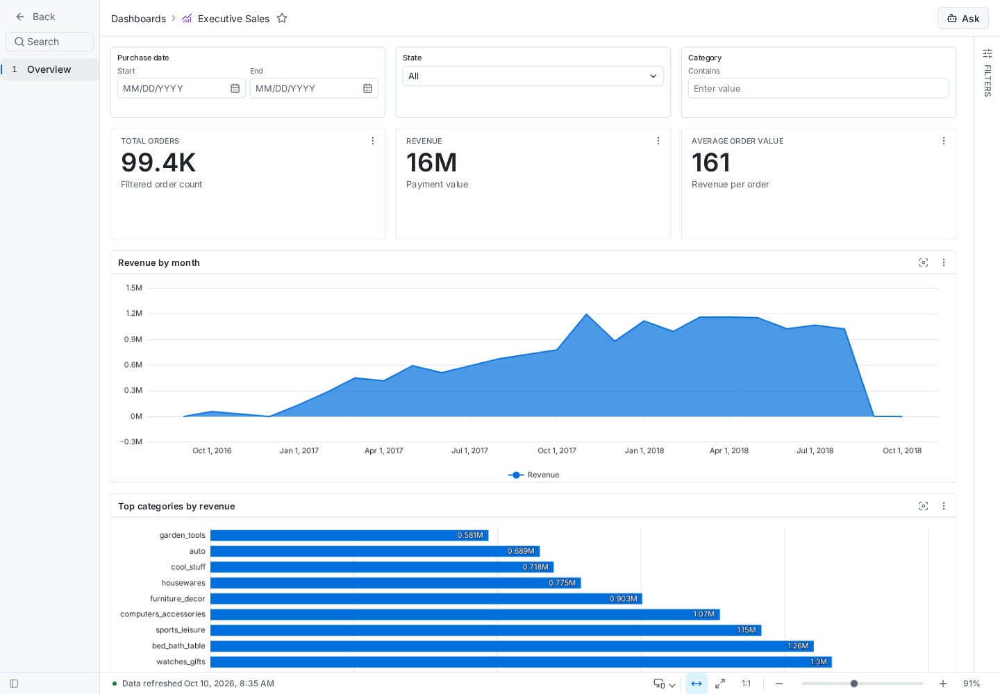

14 October 2026 · PR #1016 · Local password login · Demo Audit (Explorer)
Three confirmed defects have code fixes. Two are verified through fresh user browser interactions. The filter source compiles, but its local deployment is blocked by the cloned storage configuration. These observations do not claim complete product coverage or production AI verification.
Source corrected; browser verification pending
Before: State, Status and Delivery speed opened empty lists. After the code change: each selector declares a distinct-value source on operations_orders. The complete dashboard source passes compilation. Local publication was rejected with DELIVERY_INPUT_UNAVAILABLE because DuckLake DATA_PATH does not match the expected object root in the copied audit environment. The existing serving dashboard is unchanged; no after screenshot is claimed.


Verified as the regular demo user
Before: saving created a persistent record, but the URL omitted its ID; refresh returned to an unnamed, unsaved view. After: the saved baseline synchronizes the browser URL while retaining the query and dashboard return destination. A newly saved exploration retained its title and Saved status after desktop and mobile reloads.



Verified for old and newly sent messages
Before: sent dashboard chips had an empty href and reloaded the conversation. After: catalog references receive canonical governed routes; historical messages receive a rendering fallback. References without a browser destination omit the href. Both an existing message and a fresh message opened Executive Sales from the demo user account.




Production browser assets and the Go application build succeeded. Existing focused frontend suites passed: 45 checks, 0 failures. Agent module reference/context checks passed; the agent UI package compiled with no matching cases. Dashboard source validation returned ok:true and no diagnostics. No new test cases or full CI pass were added. Browser screenshots are real localhost captures; the chat provider is the existing deterministic local playground.
The temporary CLI authorization was revoked. No demo-user role, login-mode, production deployment, or merge was changed. The temporary saved exploration was archived after verification.